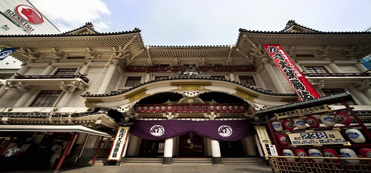
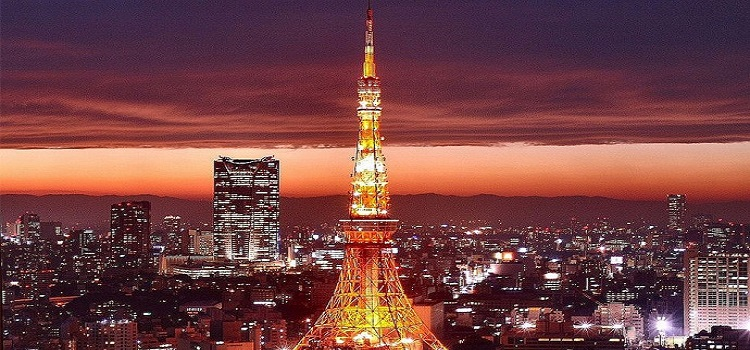

#歌舞伎座#
歌舞伎座是位於東京銀座的歌舞伎專用劇場，1914年起松竹在此創業。 1889年11月21日開業以來，曾遭受火災、戰火，歷經數次燒毀、復興、改建，現在的建築建成於1951年。
桃山時代風格的現歌舞伎座，建成後經歷了50年曆史，已被列為國家有形文化遺產，是頗為珍貴的建築。在迄今為止100年多年的歲月，此地不斷上演歌舞伎，名副其實地保持了最具代表性歌舞伎劇場的寶座。
地址：日本東京都中央區銀座4-12-15

圖：歌舞伎座
#東京塔#
東京地標性建築物，位於東京都港區芝公園，高332.6米。東京塔除主要用於發送電視、廣播等各種無線電波外、還在大地震發生時發送JR列車停止信號，兼有航標、風向風速測量、溫度測量等功能。
東京塔以巴黎埃菲爾鐵塔為範本而建造，1958年10月14日竣工，此後一直為東京第一高建築物，直至2012年2月29日東京晴空塔（634米）建成而退居第二位。世界排名目前在十名開外，前三名為迪拜的哈利法塔（828米）和東京晴空塔（634米）和上海中心大廈（632米）。
東京塔的顏色為紅白相間，是因為航空交通管制規定以利辨識。近年來大眾的景觀要求提升，鐵塔不再有顏色限制，但原有的顏色就這樣保留下來。燈光照明則由世界著名照明設計師石井乾子設計主持，照明時間為日落到午夜0點之間。燈光顏色隨季節變化，夏季為白色，春、秋、冬季為橙色。
地址：日本東京都港區芝公園

圖：東京塔
#築地市場#
築地市場自開業以來六十餘年，一直是日本屈指可數的市場，特別是水產品號稱世界最大的規模。每天清晨的金槍魚拍賣吸引了無數遊客前往。築地市場內部叫做“場內”，而附近350餘家的商店街則被稱做場外市場。
其魚市的歷史可以一直追溯到江戶時代，德川家康將軍為滿足江戶初期城市居民的菜籃，把大阪的漁民移到江戶灣作業，成了魚市的起點。同時魚市裡還有很多商品值得購買。鮮魚、鹹魚、乾魚、貝類、各種海產、精肉、廚房用品和茶葉，樣樣都是嚴加篩選的上等品。
地址：日本東京都中央區築地的公營批發市場